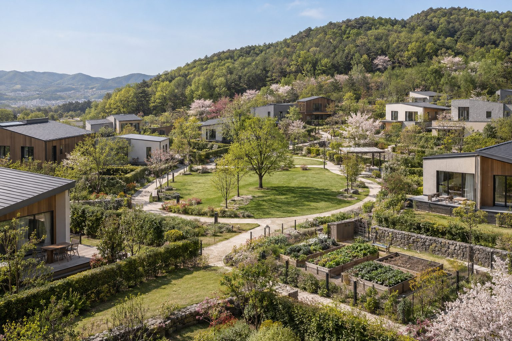

단지조경
집과 집 사이를 숲과 정원으로 잇는 단지를 계획하고 있습니다.

AI 생성 이미지숲에 기대는 배치
청명산 숲을 단지의 배경으로 두고, 필지마다 마당이 숲 쪽을 향하도록 배치를 검토하고 있습니다.
마당은 집마다
필지별로 잔디 마당과 텃밭을 둘 수 있습니다. 세부 조경 계획은 설계 확정 후 안내합니다.
집과 집 사이를 숲과 정원으로 잇는 단지를 계획하고 있습니다.

AI 생성 이미지청명산 숲을 단지의 배경으로 두고, 필지마다 마당이 숲 쪽을 향하도록 배치를 검토하고 있습니다.
필지별로 잔디 마당과 텃밭을 둘 수 있습니다. 세부 조경 계획은 설계 확정 후 안내합니다.
타입·가격·일정은 설계 확정에 맞춰 순서대로 알려드립니다.